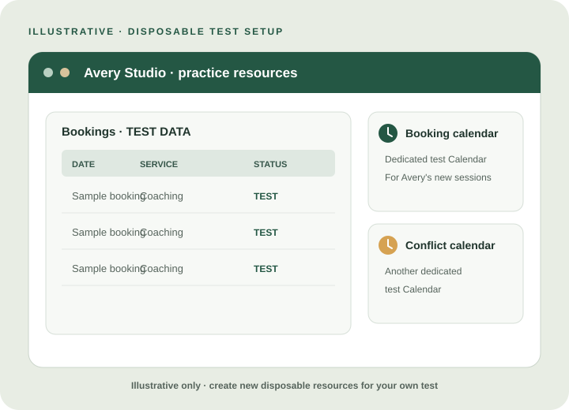
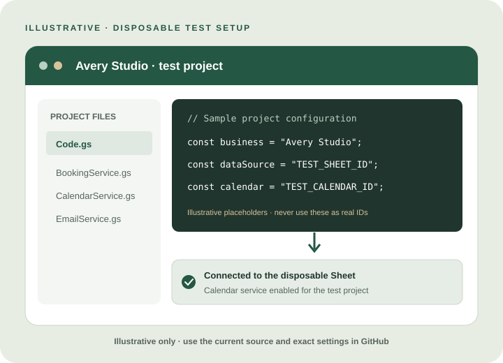
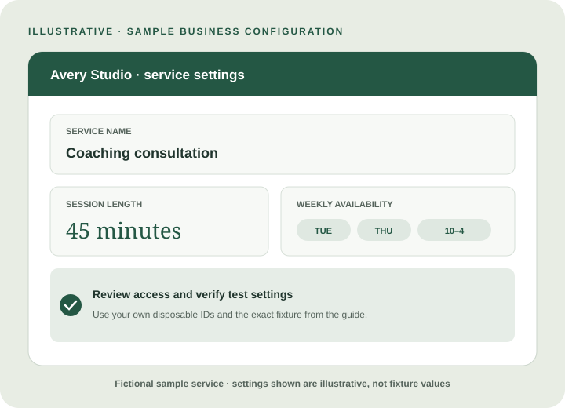
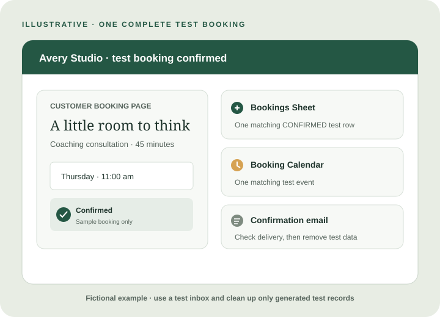

A CLEAR LOOK AT THE CURRENT SETUP
Getting started,
with eyes open.
Follow Avery Studio, a coaching practice setting up 45-minute consultations. We’ll use that familiar booking example to make each technical setup step easier to picture.
-
AVERY STUDIO · COACHING
Prepare a safe practice space
Avery creates a fresh Sheet and two test Calendars: one for new consultations, one to check for conflicts. They keep real client details and the studio’s live Calendar out of the practice setup.
Create a disposable Sheet and two dedicated test Calendars. The configuration guide specifies different business and Calendar timezones to exercise time conversion.
Detailed actions and reference
Create a new disposable Sheet and two dedicated test Calendars: one for booking events and one for checking conflicts. Keep real customer records and production calendars out of this setup.
The configuration guide specifies different business and Calendar timezones to exercise time conversion. Record the test IDs and environment as directed.
Follow the disposable Sheet configuration guide
-
AVERY STUDIO · COACHING
Connect the booking engine
Avery links a new Apps Script project to the practice Sheet and adds OpenBook’s code. That lets the test booking page read the example service and check the studio’s test Calendars.
Bind a Google Apps Script project to the disposable Sheet, copy the backend files, enable Calendar Advanced Service v3, and set the Script Properties for the test Sheet and optional static test frontend.
Detailed actions and reference
Bind a new Google Apps Script project to the disposable Sheet and copy the current backend source files into it. Enable Calendar Advanced Service v3 in Apps Script and its associated Google Cloud project.
Set the Script Properties
SPREADSHEET_IDto the test Sheet ID andGITHUB_PAGES_URLto your separate static test frontend URL, or leave the latter blank for backend-only testing. Keep the script timezone at UTC as documented.
-
AVERY STUDIO · COACHING
Set up the example service
Avery checks the requested Google access, then adds the service hours and availability for practice consultations. Every setting points to the disposable resources.
Review source code and the actual Google permission prompt, run migrations, configure the documented fixture, enable smoke-test mode, and verify every configured ID is disposable.
Detailed actions and reference
Review the source and permissions before authorizing. The script uses Sheets to access booking data, checks and manages events on configured Calendars, and sends booking emails. The Apps Script manifest does not list explicit OAuth scopes; review the actual Google permission prompt for the access requested by your project.
Run
runMigrations()and verify the seven generated tabs andSettings.schema_version = 1. Populate the Settings, Service, recurring availability, and exception fixture exactly as the configuration guide describes. Setsmoke_test_modetotrueand check every configured ID belongs to your disposable assets.The technical guide contains the current tables and values; use those rather than copying an illustrative business example from the homepage.

-
AVERY STUDIO · COACHING
Try and verify a booking
Avery opens the disposable booking page, chooses a 45-minute coaching time, and checks the confirmation. They verify the matching Sheet row, Calendar event, and email, then remove the test data.
Deploy a test web app against disposable assets only, confirm its execution and access settings, run the transactional/public lifecycle walkthrough, then remove the deployment and test resources.
Detailed actions and reference
Test only: run the Calendar and email configuration checks in the smoke-test guide, then deploy a new test web-app version using only the disposable Sheet and Calendars. The manifest runs the web app as the deploying account and allows anonymous access; review this deployment setting before publishing the test.
Configure a separate local or test copy of the booking frontend with that test web-app endpoint. The endpoint connects the frontend to Apps Script; it is not the page you send customers. The GitHub Pages product-site URL is also different from an owner's customer booking URL.
Follow the smoke-test guide to run the transactional helper and the public booking and lifecycle walkthrough. The helper suppresses booking emails; use only a test inbox you control for message-delivery checks. Verify its generated records and events were cleaned up. Remove the test deployment and disposable assets when finished.
Follow the test walkthrough on GitHub
WHAT YOU ARE VERIFYING
One booking, across your tools.
A new submitted booking becomes CONFIRMED, creates a blocking event on the business Calendar, and sends a confirmation email with booking details and a management link. Google Sheets is the authoritative record for bookings and capacity. Later cancellation and reschedule requests go to operator review.